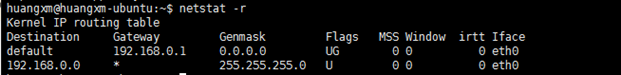
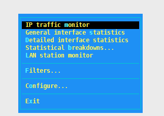

1、linux常用的监控命令
1.1. top
显示所有正在运行而且处于活动状态的实时进程， 而且会定期更新显示结果；它显示了CPU使用率，内存使用率，交换内存使用大小，调整缓存使用大小，缓冲区使用大小，进程PID， 使用的命令等信息。
1.2. vmstat

1 | 一般是通过两个数字参数来完成的，第一个参数是采样时间间隔，单位是秒， 第二个参数是采样的次数 |
1.3. lsof
列出打开的文件；它常用于以列表形式显示所有打开的文件和进程，包括磁盘文件，网络套接字，管道，设备和进程。
主要情形之一就是 无法挂载磁盘和显示正在使用或者打开某个文件的错误时，查看谁正在使用。
1.4. tcpdump
apt-get install tcpdump
用于捕捉或过滤网络上指定接口上接收或者传输的TCP/IP包。
-i : 网络接口
-c ： 需要输出包数量
1.5. netstat
用于监控进出网络的包和网络接口统计的命令行工具，非常有用，用来监控网络性能，解决网络相关问题。
-h : 查看帮助
-r : 显示路由表
-i : 查看网络接口


1.6. Htop
一个非常高级的交互式实时linux进程监控工具，和top相似，但更友好, 还支持鼠标。
sudo apt-get install htop
1.7. iotop
监控linux磁盘I/O, 用于查找大量使用磁盘读写进程的时候。python版本需要2.7以上。
1 | $ apt-get install iotop |
-h: 查看帮助
1.8. iostat
查看存储设备输入和输出状态统计的工具，用来追踪存储设备的性能 问题；包括设备，磁盘，NFS远程磁盘。
sudo apt-get install sysstat
1 | %user: 在用户级别运行所使用的CPU百分比 |
1.9. iptraf
用于采集通过网络接口的IP流量信息，包括tcp标记，icmp信息，TCP，UDP信等。
1 | $ sudo apt-get install iptraf |



1.10. nethogs
监控每个进程使用的网络带宽
1 | $ sudo apt-get install nethogs |

1.11. iftop
监控网络接口的应用网络带宽使用情况
1 | $ sudo apt-get install iftop |

1 | => : 表示 流量方向 |
1.12. system monitor
监控cpu,内存，进程，硬盘的信息；分为进程监控，资源监控，文件监控; 遗憾的是需要图形界面支持。
1 | sudo apt-get install gnome-system-monitor |
2、nmtui配置网卡
使用nmtui命令（上一篇博客里有介绍界面）